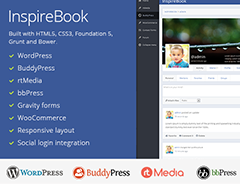

The only complete media solution which integrates with BuddyPress, bbPress and WordPress seamlessly!
rtMedia for WordPress, BuddyPress and bbPress.
By rtCamp
Easiest possible method!
Make it more functional and beautiful!

It's showtime!!!